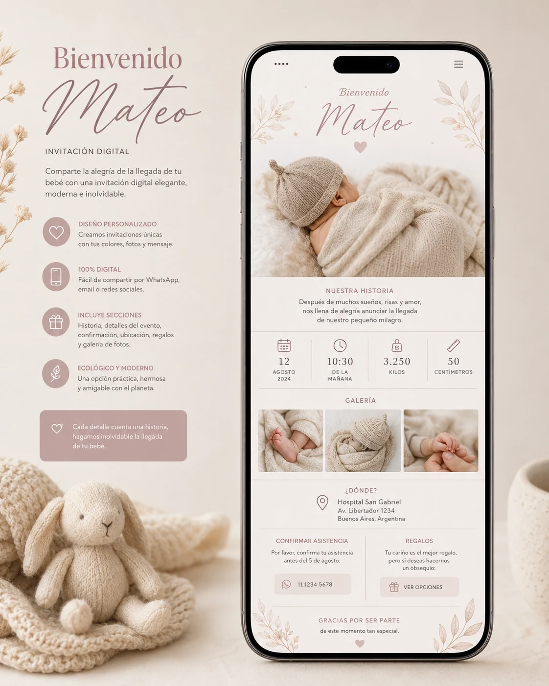
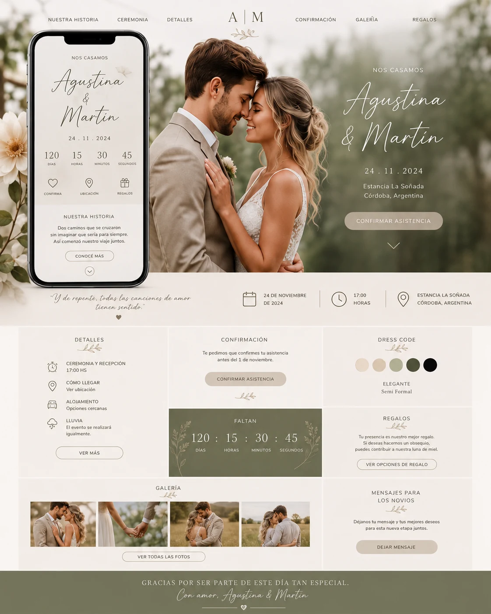
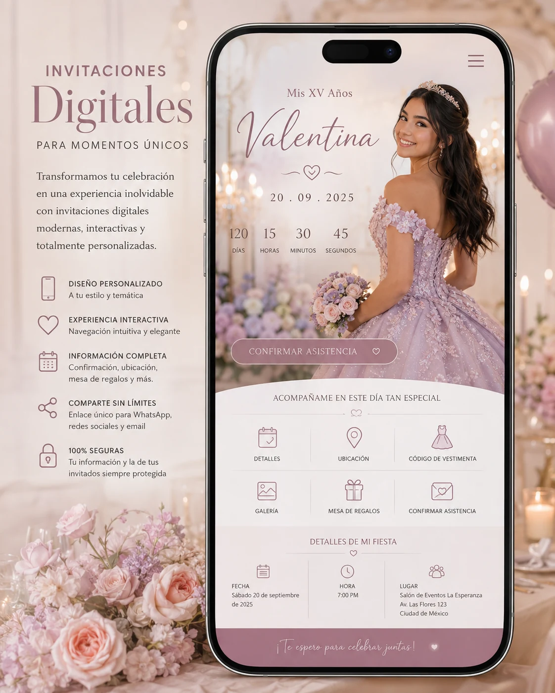
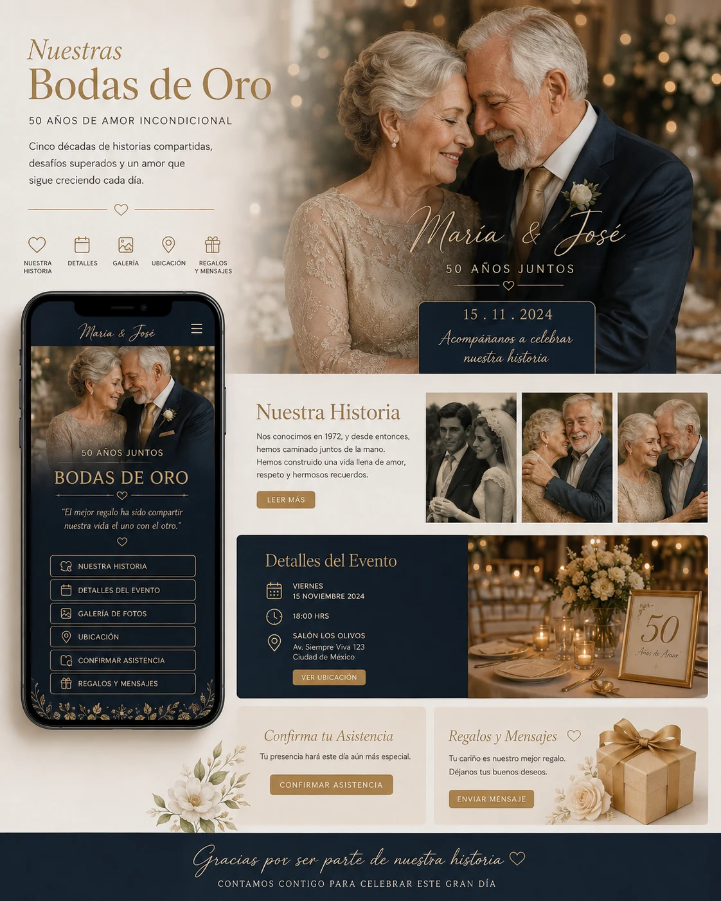

Nacimientos · Bautismos · Baby shower
Una bienvenida cálida y delicada.
Presentación del bebé, historia, fecha, ubicación, galería y confirmación para compartir la alegría con familia y amigos.
Diseñamos y desarrollamos proyectos digitales claros, visuales y funcionales: desde micrositios e invitaciones hasta landing pages, formularios y experiencias web a medida. Cada proyecto nace de una necesidad concreta y se construye con identidad propia.

Un proyecto digital puede concentrar información, contar una historia, captar consultas, confirmar asistencia, presentar un servicio o facilitar una acción. La tecnología se adapta al objetivo, no al revés.
El diseño se adapta a cada identidad: institucional, comercial, profesional, emocional, minimalista, temático o completamente a medida.
Las invitaciones y micrositios para eventos siguen siendo una parte importante de Área 1. Estos ejemplos muestran cómo una historia puede convertirse en una experiencia web completamente personalizada.

Presentación del bebé, historia, fecha, ubicación, galería y confirmación para compartir la alegría con familia y amigos.

Cuenta regresiva, código de vestimenta, ubicación, mesa de regalos, galería y confirmación en una experiencia moderna.

Recorrido por los años vividos, fotografías, mensajes, detalles de la celebración y un espacio especial para los recuerdos.
Historia de la pareja, agenda, mapa, alojamiento, dress code, regalos, confirmación y galería con una estética completamente personalizada.
Experiencias web enfocadas en un proyecto, servicio, campaña, evento o necesidad específica.
Páginas orientadas a presentar una propuesta, captar consultas o conducir a una acción concreta.
Contacto, inscripción, RSVP, relevamientos y otros flujos diseñados para simplificar la respuesta del usuario.
Textos, fotografías, galerías y recorridos que ordenan la información y cuentan una historia con identidad.
Ubicaciones, agendas, indicaciones, documentación y accesos organizados en un solo lugar.
WhatsApp, redes sociales, formularios, analítica y servicios externos conectados según el proyecto.
Animaciones, música, imágenes y detalles visuales que enriquecen la experiencia cuando aportan valor.
Diseño responsive, navegación clara y publicación lista para compartir desde cualquier dispositivo.
Una presencia digital clara, profesional y fácil de compartir.
Un sitio o micrositio con mayor profundidad de contenido y funciones.
Diseño exclusivo y funcionalidades desarrolladas para una necesidad particular.
Objetivo, público, identidad, alcance y resultado esperado.
Textos, imágenes, datos, prioridades y arquitectura de información.
Propuesta visual, experiencia móvil y construcción de la solución.
Pruebas, ajustes de contenido, navegación y detalles finales.
Entrega del proyecto listo para usar, compartir y medir.
Podés iniciar la consulta desde nuestro formulario o escribirnos directamente por WhatsApp.